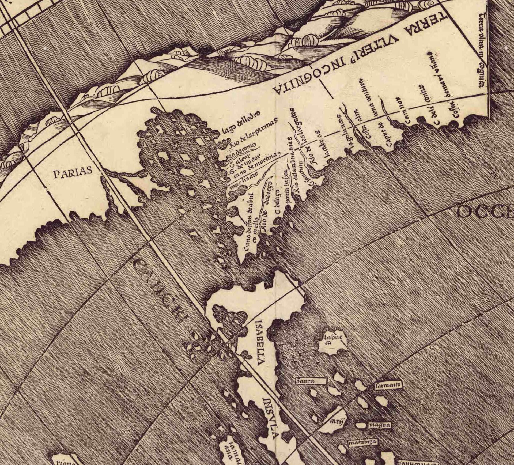

Directions: Fill in the chart as we build the two worlds piece by piece. Keep this page in your notebook. You will use it again on the review day before the unit test.

| Piece of the picture | What it was | Kind: city, league, kingdom, or change | The evidence |
|---|---|---|---|
| Tenochtitlan | |||
| Cahokia | |||
| The Iroquois Confederacy | |||
| Spain and Portugal in 1491 | |||
| Columbus and the letter of 1493 | |||
| The exchange and the epidemics |
Two worlds in one sentence. Finish this sentence in your own words, using at least two rows of the chart as evidence. In 1491 the Americas and Europe were both...
| Piece of the picture | What it was | Kind: city, league, kingdom, or change | The evidence |
|---|---|---|---|
| Tenochtitlan | The capital of the Aztec empire, built on an island in Lake Texcoco, fed in part by chinampas, and one of the largest cities in the world in 1500. | City | Perhaps two hundred thousand people in 1500, more than London held at the same date. |
| Cahokia | The largest city of the Mississippian culture, near present day St. Louis, a center of trade and ceremony at its height between about 1050 and 1200. | City | Some one hundred twenty earthen mounds, the largest rising about one hundred feet. |
| The Iroquois Confederacy | The league of five Native nations in present day New York, joined under the Great Law to keep peace among themselves and deal jointly with outsiders. | League | The five nations kept a council fire at Onondaga and acted together on war, peace, and dealings with outsiders. |
| Spain and Portugal in 1491 | Rival kingdoms with the equipment of expansion: Spain completing the Reconquista at Granada in January 1492, Portugal probing down Africa in caravels. | Kingdom | Compass, astrolabe, gunpowder weapons, and the printing press stood ready beside the caravel. |
| Columbus and the letter of 1493 | A Genoese sailor sailing for Ferdinand and Isabella, who made four voyages between 1492 and 1504 and reported home in a letter printed across Europe. | Change | He took possession of the islands for the king by proclamation, no one making any resistance, in his own account. |
| The exchange and the epidemics | The Columbian Exchange of plants, animals, diseases, people, and ideas, in which epidemic disease, smallpox first, did the greatest killing. | Change | By contemporary scholarly estimates, nine people in ten died in many regions over the century after 1492. |
Two worlds in one sentence. Strong answers refuse the empty continent on one side and the single story on the other. In 1491 the Americas and Europe were both crowded, governed worlds, the Americas holding perhaps fifty million people in cities such as Tenochtitlan, mound centers such as Cahokia, and leagues such as the Iroquois Confederacy, and Europe holding rival kingdoms whose newest unified state, Spain, had just finished the Reconquista and held the ships, instruments, and printing to carry its ambitions across an ocean.